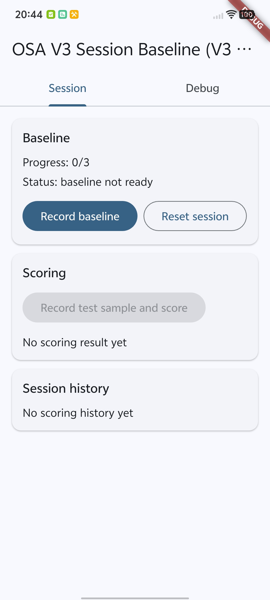
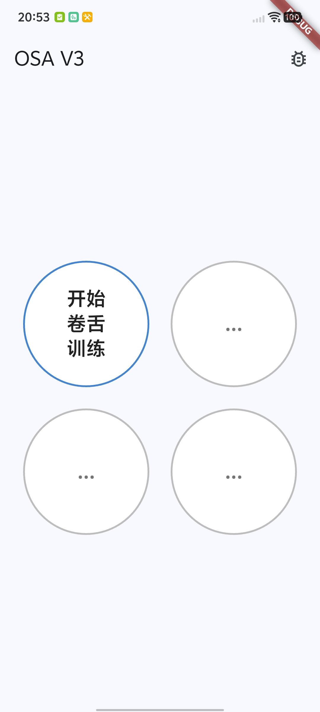
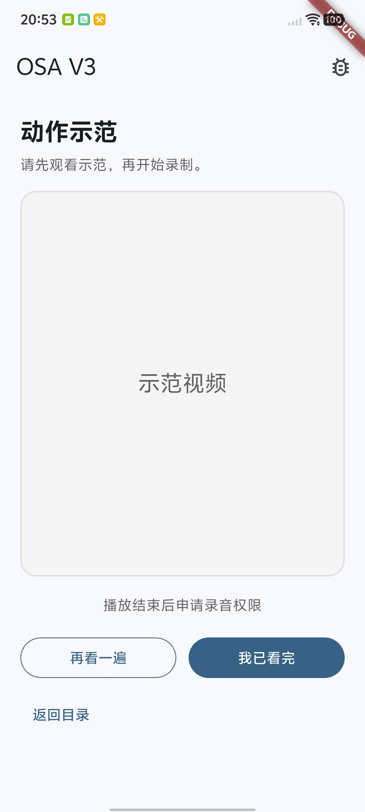
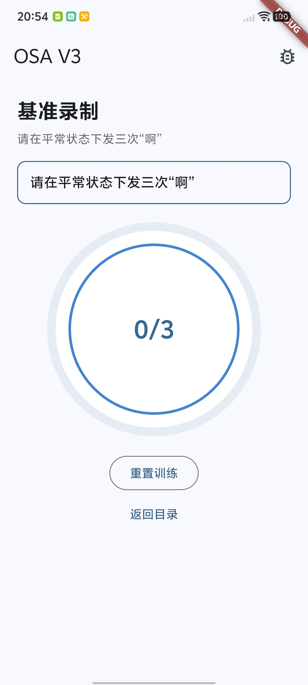
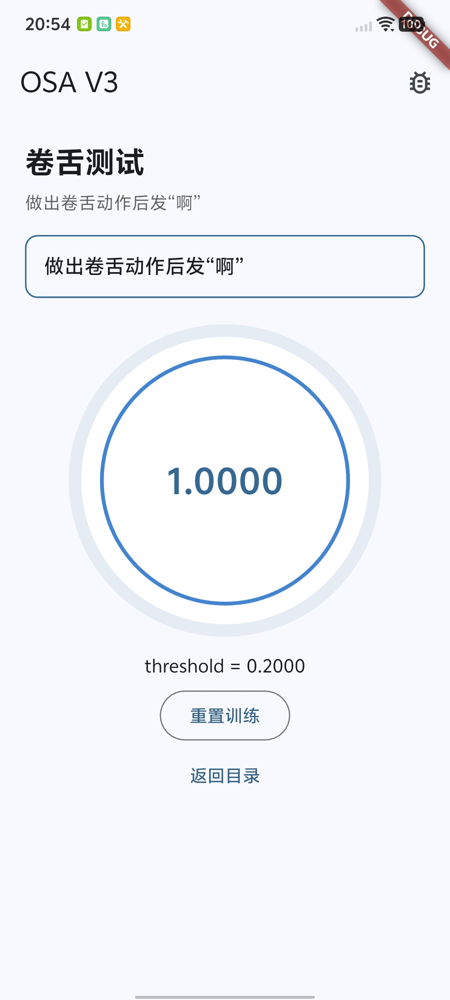

① 录音与切窗
每次采样固定 0.5 秒，采样率 16kHz，所以输入是 8000 个采样点。这一步先把输入标准化，避免后面模型被时长和采样率波动干扰。
把 V2.6 的手工特征路线升级为 DistilHuBERT 路线，完成移动端可运行闭环（录音→特征→打分→Debug 导出），并升级了前端页面，使其更用户友好。个人测试结果优于上个版本，稳定性显著提升，标准测试结果理想，中间态结果有待细化，多样本测试有待展开，各方面仍有明显提升空间。
左侧是整体链路，右侧可查看对应模块的具体说明。
每次采样固定 0.5 秒，采样率 16kHz，所以输入是 8000 个采样点。这一步先把输入标准化，避免后面模型被时长和采样率波动干扰。
app.dart：模型 bundle 加载、V2/V3 管线选择、Session
主流程入口、Debug 页面路由。
session_controller.dart：baseline 采集、profile
构建、scoring 历史、异常与日志状态统一管理。
v3_distilhubert_session_inference_pipeline.dart +
v3_embedding_capture_service.dart +
v3_distilhubert_scorer.dart。
onnx_distilhubert_embedding_extractor.dart：载入
distilhubert.onnx + .data，执行前向并做时序池化。
v3_distilhubert_bundle.dart +
model_bundle_loader.dart：参数一致性校验与 family
分流加载。
debug_page_v2.dart：导出 snapshot/session package，展示
pipelineFamily、input/pca/z/logit、history、日志。
左图：上一个版本（baseline/scoring/history 同页堆叠）。右图：新版四阶段页面（目录→示范→基准→测试）。





V3模型从手工特征切到 DistilHuBERT，端上推理链路打通，基于我个人的测试，模型稳定性得到显著提升，不会出现得分乱飘的情况，且两类标准动作的识别非常精准。但有个明显问题，现在测试只要稍微卷舌就很容易识别成极高的准确率，而此时动作并不是正确动作，即对于中间态的识别有待调整和改进。
未来工作方向：